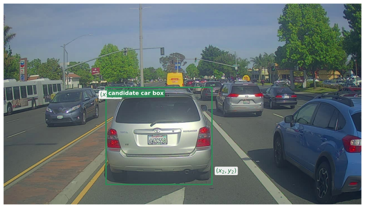
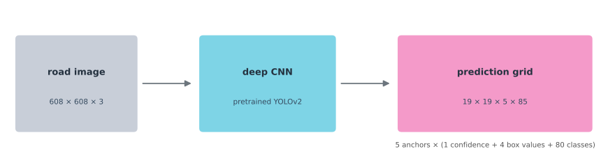
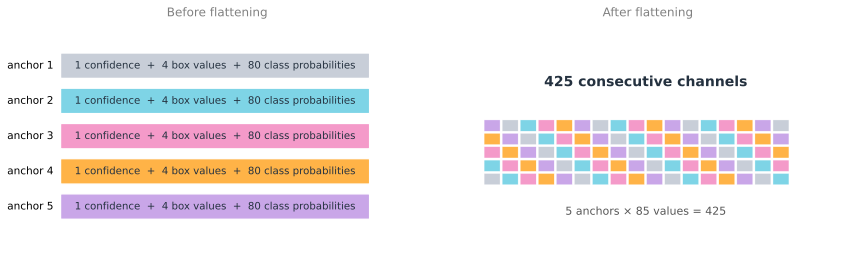
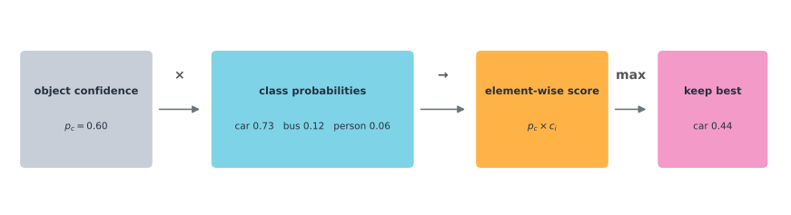
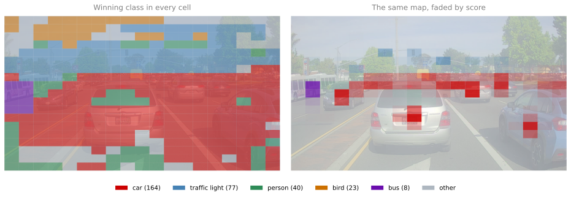
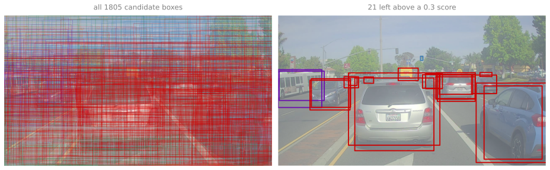
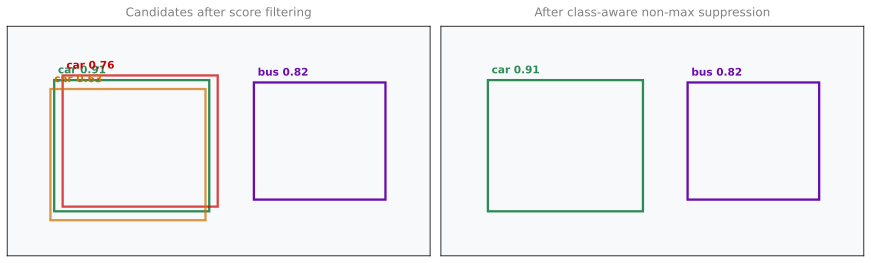
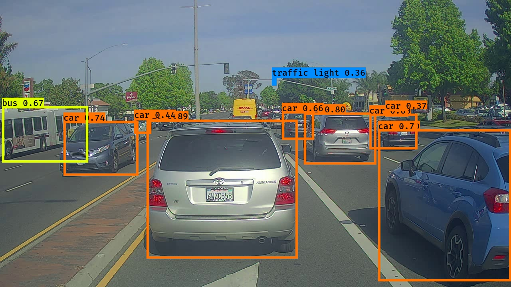

{kind=link}
{kind=link}

Lab: Car Detection with YOLO
deep-learning
convolutional-neural-networks
computer-vision
object-detection
yolo
tensorflow
non-max-suppression
lab
Use a pretrained YOLOv2 detector on a road image, filter its boxes, apply class-aware non-max suppression, and draw final detections.
ImportantSix changes from the original notebook
The assignment was written against TensorFlow 2.3 with Keras 2, and this page runs on TensorFlow 2.21 with Keras 3. Six things changed (updated 2026-08-31).
load_modelwas replaced byTFSMLayer. The pretrained YOLO model ships as a Keras 2 file that Keras 3 cannot deserialize, so it is wrapped as an inference-only SavedModel layer.- The full inference walkthrough is display-only. It needs the large pretrained weights, so it is shown as non-executing code beside its stored outputs rather than run at render time.
scale_boxesis written out inline rather than imported from theyad2khelper package.- The default score threshold is 0.3 rather than 0.6, which shows more of the detector’s behavior on the sample frame.
- Zero-detection handling was added. The original suppression code called
tf.concaton an empty list when score filtering left nothing, which raises; it now returns correctly shaped empty tensors. - A short section on YOLO26 was added, which is not in the assignment, to place the 2017 method against current practice.
The YOLO decoding, filtering and non-max-suppression logic, the anchor boxes and the Drive.ai frames are the assignment’s own.
Bounding Box Predictions with YOLO introduced the grid, target volume, and box encoding. IoU, Non-max Suppression, and Anchor Boxes showed how duplicate predictions are removed. This lab turns those ideas into the post-processing code around a pretrained YOLOv2 model.
The model is already trained. Training it needs the 204 MB weight file supplied with the original exercise and far more road images than this page needs. Our work begins after its one forward pass. We will turn a \(19 \times 19 \times 5 \times 85\) prediction tensor into labeled boxes on a real road photograph.
NoteModern Update
Updated 2026-08-18. This main lab deliberately preserves the original YOLOv2 exercise because it teaches how confidence filtering, IoU, and non-max suppression work. For current model usage, see YOLO26 Update after the original workflow.
Problem Statement
The setting is a self-driving car. A camera is mounted on the hood, and it photographs the road ahead every few seconds while the car is driven around Silicon Valley. Those photographs are the dataset, and every car in them was labeled by hand, by drawing a rectangle around it. The task is to build the detector that produces those rectangles by itself.
There are 80 classes to recognize, and the class label of a box can be written two ways. It can be an integer index, which in code runs from 0 to 79 (so car is index 2 in the COCO name list used below), or an 80 component vector with a single 1 in the position of the correct class and zeros everywhere else. The lecture notes use the second form, and this lab uses whichever is more convenient at each step. The network predicts the vector, because a network has to output a number per class, while the code that sorts and draws the results carries the integer, because an index is easier to look up in a list of names.
Training a detector like this from scratch is not on the table. It needs a large labeled dataset and a great deal of computation, so the weights here are pretrained and the work begins one forward pass later.
NoteLab Files Download
The post-processing on this page runs on small hand-made tensors, so nothing needs downloading to follow it. These are the files behind the photographs and the stored detection result.
- test.jpg (301 KB), the road frame every figure on this page uses
- test-detections.jpg (495 KB), the pretrained model’s own output on that frame
- coco_classes.txt (625 bytes), the 80 class names in the order the network predicts them
- yolo_anchors.txt (90 bytes), the five anchor shapes in grid-cell units
- yolo-outputs.npz (35 KB), the model’s own decoded output for that frame, so the figures below can be drawn without the 204 MB model
- predictions.mp4 (3.4 MB), the detector run over the whole sample
- LICENSE.txt, the Drive.ai Sample Dataset license and credits
The pretrained model itself is not hosted here. Its saved_model.pb and 204 MB variables file stay in the course lab archive.
Road Image and Box Coordinates
The Drive.ai sample folder holds 122 files, of which 120 are numbered road frames of 1280 by 720 pixels (the other two are test.jpg and an unrelated giraffe.jpg). This lab works on one of the road frames. A detector returns four numbers marking a rectangle, not a cropped car.
Two corner orders appear in what follows, and mixing them up is the most common way to get boxes that land in the wrong place. The iou function written below takes (x1, y1, x2, y2), which is the easier order to reason about on paper. The tensors that reach tf.image.non_max_suppression use (y_min, x_min, y_max, x_max) instead, because that is the order TensorFlow expects, and yolo_boxes_to_corners is the function that swaps them.
x increases rightward and y increases downward because the origin is the top-left pixel. The network receives a 608 by 608 resized copy, then makes one dense set of predictions. It does not scan separate image crops.
Two files describe what the network is set up to predict, and both are small enough to read. coco_classes.txt holds the 80 class names in the order the network predicts them, so index 2 is car. yolo_anchors.txt holds five pairs of numbers, and that is the entire definition of the five anchor boxes, because an anchor box is defined only by a width and a height. It has no position. Position comes from the grid cell that reports it.
Those five shapes were not invented. They were chosen by looking at the training data and picking height and width ratios that represent the range of objects in it, which is the k-means procedure described at the end of Anchor Boxes. Five is enough to cover 80 classes, because many classes share a silhouette.

Review Questions
1. Why is the image resized before it enters the network?
TipAnswer
The pretrained architecture expects a fixed 608 by 608 input. The final boxes are scaled back to the 1280 by 720 original frame before drawing, so the network can stay fixed while the result lines up with the original photograph.
Rearranging and Scoring Candidates
The saved model flattens five anchors and their 85 values into 425 channels. For post-processing, we immediately view them as five separate descriptions again. One description has object confidence, four box values, and 80 class probabilities.

Doing that split is the job of yolo_head, the helper supplied with the exercise in yad2k/models/keras_yolo.py. It takes the raw (m, 19, 19, 425) tensor the network emits and returns four separate tensors, because the 85 numbers in one anchor description mean four different things and each needs its own treatment. It also applies the sigmoid and exponential the raw output has not been through yet, and adds each cell’s grid offset, so the box values come back as fractions of the whole image rather than offsets inside a cell.
The four tensors are box_xy and box_wh, each (19, 19, 5, 2), holding the midpoint and the size, then box_confidence at (19, 19, 5, 1) and box_class_probs at (19, 19, 5, 80). The first two combine into the (19, 19, 5, 4) corner boxes the filtering step wants. Broadcasting the confidence against the class probabilities repeats each confidence across its 80 class slots, making one class score per class and candidate.
import tensorflow as tf
def yolo_filter_boxes(boxes, box_confidence, box_class_probs, threshold=0.6):
"""Keep candidates whose best class score reaches the threshold."""
box_scores = box_confidence * box_class_probs
box_classes = tf.math.argmax(box_scores, axis=-1)
box_class_scores = tf.math.reduce_max(box_scores, axis=-1)
mask = box_class_scores >= threshold
return (tf.boolean_mask(box_class_scores, mask), tf.boolean_mask(boxes, mask), tf.boolean_mask(box_classes, mask))
confidence = tf.constant([[[[0.90], [0.80], [0.70]]]])
boxes = tf.constant([[[[0.10, 0.15, 0.40, 0.50], [0.48, 0.52, 0.72, 0.82], [0.20, 0.25, 0.35, 0.42]]]])
# Each row is a class distribution, so each one sums to 1.
class_probs = tf.constant([[[[0.05, 0.90, 0.05], [0.85, 0.05, 0.10], [0.20, 0.50, 0.30]]]])
scores, kept_boxes, classes = yolo_filter_boxes(boxes, confidence, class_probs)
print('scores:', scores.numpy())
print('classes:', classes.numpy())
print('kept boxes:', kept_boxes.numpy())scores: [0.80999994 0.68 ]
classes: [1 0]
kept boxes: [[0.1 0.15 0.4 0.5 ]
[0.48 0.52 0.72 0.82]]The first candidate scores \(0.90 \times 0.90 = 0.81\) for its strongest class. The third reaches only 0.35 and vanishes. The diagram below recreates the original lab’s class-score figure with the multiplication made explicit.

Visualizing What the Grid Believes
Neither of the two pictures below is part of the algorithm. Both are ways of looking at an intermediate result, and both are drawn from the model’s own output on this frame, stored in yolo-outputs.npz so the figures can be produced without the 204 MB model.
The first colors every one of the 361 cells by whichever class wins its best anchor. Reading it teaches something the score alone does not.

The left panel looks confident everywhere, including over empty tarmac and sky, and that is the honest picture of what the network emits. Every cell names a class because every cell has to produce 80 numbers and one of them is always largest. The right panel fades each cell by its score, and the picture collapses onto the cars. Almost all of the left panel is noise with a score near zero, which is precisely what the threshold is for.
The second picture plots the boxes themselves.

That left panel is the whole point of “you only look once”. Nineteen by nineteen cells with five anchor boxes each is \(19 \times 19 \times 5 = 1805\) boxes, and every one of them came from a single pass over the image. The right panel is the same thing after one line of filtering. Everything from here is about getting from the left panel to ten rectangles.
Review Questions
1. Why does multiplying (19, 19, 5, 1) by (19, 19, 5, 80) produce (19, 19, 5, 80)?
TipAnswer
Broadcasting repeats the final dimension of size 1 across the 80 class slots. Each anchor confidence multiplies all of its class probabilities without an explicit loop.
Computing IoU and Suppressing Duplicates
The preceding page derived IoU geometrically. Here it becomes code, and the geometry is worth stating once in terms of the corners.
A box is two corners, upper left \((x_1, y_1)\) and lower right \((x_2, y_2)\), so its area is \((x_2 - x_1)(y_2 - y_1)\). The intersection of two boxes is itself a box. Its upper left corner is the larger of the two upper left corners, taken coordinate by coordinate, because the overlap starts wherever the later box starts. Its lower right corner is the smaller of the two lower right corners, because the overlap ends wherever the earlier box ends. So max finds one corner and min finds the other.
Two cases break that if it is written naively. When the boxes do not overlap at all, the arithmetic produces a negative width or a negative height, which would give a positive area once multiplied by another negative and quietly report overlap where there is none. When the boxes touch along an edge or meet at a single corner, one of the two dimensions comes out exactly zero and the answer should be zero. Clamping both dimensions at zero before multiplying handles both cases with one guard.
def iou(box1, box2):
"""Return IoU for corner-form boxes ordered as (x1, y1, x2, y2)."""
x1a, y1a, x2a, y2a = box1
x1b, y1b, x2b, y2b = box2
intersection = max(min(x2a, x2b) - max(x1a, x1b), 0) * max(min(y2a, y2b) - max(y1a, y1b), 0)
union = (x2a - x1a) * (y2a - y1a) + (x2b - x1b) * (y2b - y1b) - intersection
return intersection / union
print('overlapping boxes:', round(iou((2, 1, 4, 3), (1, 2, 3, 4)), 6))
print('touching corners:', iou((1, 1, 2, 2), (2, 2, 3, 3)))overlapping boxes: 0.142857
touching corners: 0.0Thresholding removes weak predictions but not repeated descriptions of one object. That is what non-max suppression is for, and it is three steps repeated until nothing is left.
- Select the box with the highest score and output it.
- Compute its overlap with every remaining box of the same class, and discard any whose IoU reaches the threshold.
- Go back to step 1 with whatever survives.
The restriction to one class in step 2 is what stops a confident car from deleting the pedestrian standing in front of it. In code that is easiest to arrange by splitting the candidates by class up front, suppressing inside each class independently, and merging the survivors at the end.

The implementation below follows the divide-and-conquer shape the exercise recommends. Split the candidates by class, let tf.image.non_max_suppression do the work within each class, then merge the survivors and keep the highest scoring max_boxes of them. That last step is a third filter in its own right, not a consequence of the first two. On the stored yolo-outputs.npz activations, score filtering leaves 21 boxes and class-aware suppression leaves 13, so three more disappear purely because max_boxes is 10. tf.where records where each class’s candidates sat in the original arrays, so the indices tf.image.non_max_suppression returns can be mapped back.
def yolo_non_max_suppression(scores, boxes, classes, max_boxes=10, iou_threshold=0.5):
"""Keep high-scoring boxes while suppressing overlaps within each class."""
scores, boxes, classes = tf.cast(scores, tf.float32), tf.cast(boxes, tf.float32), tf.cast(classes, tf.int32)
kept = []
for label in tf.unique(classes)[0]:
mask = classes == label
original = tf.squeeze(tf.where(mask), axis=1)
selected = tf.image.non_max_suppression(tf.boolean_mask(boxes, mask), tf.boolean_mask(scores, mask), max_boxes, iou_threshold=iou_threshold)
kept.append(tf.gather(original, selected))
# Score filtering can legitimately leave nothing at all, and tf.concat
# rejects an empty list, so return correctly shaped empty tensors instead.
if not kept:
return (tf.zeros([0], tf.float32), tf.zeros([0, 4], tf.float32), tf.zeros([0], tf.int32))
kept = tf.concat(kept, axis=0)
kept = tf.gather(kept, tf.argsort(tf.gather(scores, kept), direction='DESCENDING')[:max_boxes])
return tf.gather(scores, kept), tf.gather(boxes, kept), tf.gather(classes, kept)
scores = tf.constant([0.91, 0.76, 0.82])
boxes = tf.constant([[1.00, 1.00, 4.00, 4.00], [1.20, 1.15, 4.05, 4.10], [1.20, 1.15, 4.05, 4.10]])
classes = tf.constant([0, 0, 1])
kept_scores, kept_boxes, kept_classes = yolo_non_max_suppression(scores, boxes, classes)
print('kept scores:', kept_scores.numpy())
print('kept classes:', kept_classes.numpy())kept scores: [0.91 0.82]
kept classes: [0 1]Review Questions
1. Why clamp the width and height of an intersection to zero?
TipAnswer
When boxes do not overlap, the calculated intersection width or height is negative. A negative-sized rectangle is not real, so clamping it to zero gives the correct zero intersection area.
1. Why is non-max suppression run once per class?
TipAnswer
Overlap only signals a duplicate when both boxes claim the same kind of object. A person can overlap a car, so processing all classes together could delete a real detection.
Running Pretrained YOLO
The final wrapper converts midpoint and size values into corners, score-filters, scales the 608 by 608 coordinates back to the original image, and suppresses duplicates. This is the source lab’s complete sequence, with grading scaffolding removed.
def yolo_boxes_to_corners(box_xy, box_wh):
box_mins, box_maxes = box_xy - box_wh / 2, box_xy + box_wh / 2
return tf.keras.backend.concatenate([box_mins[..., 1:2], box_mins[..., 0:1], box_maxes[..., 1:2], box_maxes[..., 0:1]])
def yolo_eval(yolo_outputs, image_shape=(720, 1280), max_boxes=10, score_threshold=0.3, iou_threshold=0.5):
box_xy, box_wh, box_confidence, box_class_probs = yolo_outputs
scores, boxes, classes = yolo_filter_boxes(yolo_boxes_to_corners(box_xy, box_wh), box_confidence, box_class_probs, score_threshold)
boxes = boxes * tf.constant([image_shape[0], image_shape[1], image_shape[0], image_shape[1]], tf.float32)
return yolo_non_max_suppression(scores, boxes, classes, max_boxes, iou_threshold)The weights themselves have a history worth knowing. They were trained by the YOLO authors and published on the official YOLO website in the Darknet framework, then converted to Keras by Zelener (2017), whose YAD2K project also supplies yolo_head and the image helpers this lab imports. They are the parameters of YOLOv2 specifically, although the exercise refers to them simply as YOLO.
The source archive includes saved_model.pb, its 204 MB variables file, yolo_anchors.txt, and coco_classes.txt. The full model is intentionally not hosted with this page. It is large and uses a legacy TensorFlow graph. The code below runs from the supplied course archive, while the post-processing above runs in this page.
Two helpers do the work either side of the network. preprocess_image opens the file, resizes it to 608 by 608, reshapes it into a batch of one, and divides by 255 so the values land between 0 and 1. It hands back two things, a PIL image kept at full size for drawing on later, and the numpy array that goes into the network. At the other end, the step written here as a multiplication is what the original calls scale_boxes, and it maps coordinates expressed as fractions of the input onto pixels of the 720 by 1280 photograph, which is the only reason the rectangles land on the right cars.
One line of the original notebook no longer works. It loads the model with load_model('model_data/', compile=False), and Keras 3 refuses that, because model_data/ is a TensorFlow SavedModel directory rather than a .keras or .h5 file. The replacement is keras.layers.TFSMLayer, which wraps a SavedModel as an inference-only layer. It returns a dictionary keyed by the graph’s output name, which for this model is conv2d_22, so the result has to be unwrapped before yolo_head sees it.
from pathlib import Path
import keras
from yad2k.models.keras_yolo import yolo_head
from yad2k.utils.utils import preprocess_image, read_anchors, read_classes, draw_boxes
lab_root = Path('Car detection with YOLO')
class_names = read_classes(str(lab_root / 'model_data/coco_classes.txt'))
anchors = read_anchors(str(lab_root / 'model_data/yolo_anchors.txt'))
# Keras 3 cannot load a SavedModel directory through load_model, so wrap it instead.
yolo_model = keras.layers.TFSMLayer(lab_root / 'model_data', call_endpoint='serving_default')
image, image_data = preprocess_image(lab_root / 'images/test.jpg', model_image_size=(608, 608))
raw = yolo_model(image_data)['conv2d_22'] # the SavedModel's single named output
yolo_outputs = yolo_head(raw, anchors, len(class_names))
scores, boxes, classes = yolo_eval(yolo_outputs, image_shape=(image.size[1], image.size[0]))
draw_boxes(image, boxes, classes, class_names, scores)
image.save('out/test.jpg', quality=100)That run reports 10 boxes, and they are worth reading rather than glancing at. Eight are cars, one is the bus at the left edge, and one is a traffic light 11 pixels wide near the top of the frame. Nothing else in a busy street scene survives, which is the whole point of the two filters. Coordinates are pixels in the original 1280 by 720 photograph, not in the 608 by 608 input the network saw.
| class | score | top left | bottom right |
|---|---|---|---|
| car | 0.89 | (367, 300) | (745, 648) |
| car | 0.80 | (761, 282) | (942, 412) |
| car | 0.74 | (159, 303) | (346, 440) |
| car | 0.70 | (947, 324) | (1280, 705) |
| bus | 0.67 | (5, 266) | (220, 407) |
| car | 0.66 | (706, 279) | (786, 350) |
| car | 0.60 | (925, 285) | (1045, 374) |
| car | 0.44 | (336, 296) | (378, 335) |
| car | 0.37 | (965, 273) | (1022, 292) |
| traffic light | 0.36 | (681, 195) | (692, 214) |

The lowest surviving scores are the interesting ones. The 0.37 car and the 0.36 traffic light both clear the 0.3 threshold this run uses, and both are genuinely there. Raising the threshold to the 0.6 the notebook defaults to would drop them along with the 0.44 car, which is the trade the threshold controls.
Review Questions
1. Why are model boxes scaled before drawing them?
TipAnswer
The network predicts positions in the resized 608 by 608 input. The photograph has different dimensions, so its boxes must be rescaled before their pixels can line up with the original image.
Detecting Across the Whole Dataset
Wrapping those steps in a function called predict(image_file) is what the original exercise does, and it is worth doing here for the same reason. The interesting part of the pipeline is per image, so the moment it is a function, running it over the whole sample is a loop.
import os
from PIL import Image
def predict(image_file):
"""Run the detector on one frame, draw the boxes, and save the result."""
image, image_data = preprocess_image(lab_root / 'images' / image_file,
model_image_size=(608, 608))
raw = yolo_model(image_data)['conv2d_22']
yolo_outputs = yolo_head(raw, anchors, len(class_names))
out_scores, out_boxes, out_classes = yolo_eval(
yolo_outputs, image_shape=(image.size[1], image.size[0]),
max_boxes=10, score_threshold=0.3, iou_threshold=0.5)
print(f'Found {len(out_boxes)} boxes for images/{image_file}')
draw_boxes(image, out_boxes, out_classes, class_names, out_scores)
image.save(os.path.join('out', image_file), quality=100)
return out_scores, out_boxes, out_classes
# The images folder also holds test.jpg and an unrelated giraffe.jpg, so keep
# only the numbered road frames that make up the drive.
frames = sorted(f for f in os.listdir(lab_root / 'images') if f[:4].isdigit())
for frame in frames:
predict(frame)Nothing in predict is new. It is the same preprocess, forward pass, decode, filter and suppress, with the drawing and saving attached. Swapping test.jpg for any other filename in the images folder is the whole of “test it on your own images”.
The folder holds 122 files in total, of which 120 are the numbered road frames. The other two are test.jpg and an unrelated giraffe.jpg, which the filter above skips. Run it over those 120 frames and stitch the results back together in order, and the still picture becomes the thing the detector was actually built for.
Watching it run is a better test than any single frame. Boxes appear and disappear between consecutive frames on the same car, distant cars are picked up only once they are large enough to clear the threshold, and the occasional box flickers onto something that is not a vehicle at all. None of that is visible in one photograph, and all of it is the ordinary behavior of a detector run per frame with no memory of the frame before.
YOLO26 Update
Everything above is a 2016 model driven by 2016 conventions. It is fair to ask whether the lab should simply be rewritten against a current detector, so this section answers that question rather than dodging it, and then shows how to keep answering it after this page stops being maintained.
The current Ultralytics family is YOLO26, described by Jocher et al. (2026). The original workflow uses YOLOv2, presented as YOLO9000 by Redmon and Farhadi (2017).
Should This Lab Be Rewritten
No, and the reason is the most interesting fact about YOLO26.
This lab is not really about YOLO. It is about the three operations that turn a dense prediction tensor into a short list of objects, namely score thresholding, IoU, and non-max suppression. YOLO26 is documented as natively end-to-end. Its default head produces final detections directly, with no non-max suppression step at all. Port this lab to it and every exercise disappears. yolo_filter_boxes, iou, yolo_non_max_suppression and yolo_eval collapse into model.predict(image), and the reader learns one API call instead of the ideas underneath it.
That is a genuine argument for keeping the old model as the teaching vehicle, not nostalgia.
It is also not an argument that the operations are obsolete, and this is the part worth being precise about. YOLO26 ships a dual-head architecture. The one-to-one head is the default and returns at most 300 detections per image with no post-processing. The one-to-many head produces traditional YOLO output, shaped (N, nc + 4, 8400), which still requires non-max suppression and which the documentation notes is typically slightly more accurate. Choosing it is one keyword.
# Run manually in a separate environment. Do not run this during a site render.
# uv pip install "ultralytics==8.4.108"
from ultralytics import YOLO
model = YOLO('yolo26n.pt') # downloads the public pretrained weights once
results = model.predict('images/test.jpg') # one-to-one head, no NMS
results = model.predict('images/test.jpg', end2end=False) # one-to-many head, needs NMSSo the code written above is not a museum piece. It is what the second line still needs, and it is what most detectors that are not YOLO26 still need. The concept outlived the model, which is the usual pattern and the reason the lab is worth doing in its original form.
What Actually Changed
Table 2 is the comparison, restricted to things that can be checked against the paper and the documentation rather than impressions.
| Original lab, YOLOv2 | Current, YOLO26 | |
|---|---|---|
| Duplicate removal | Score threshold plus non-max suppression, written by hand in this lab | End-to-end by default, one-to-one head, no NMS; the one-to-many head still needs it |
| Detection head | Five anchor boxes per cell, read from yolo_anchors.txt |
Dual head, (N, 300, 6) end-to-end or (N, nc + 4, 8400) traditional |
| Box regression | Direct offsets, decoded by hand in yolo_head |
Distribution Focal Loss removed, which simplifies the head and the export path |
| Output to decode | 19 × 19 × 425, unpacked by the reader |
Final detections, or the traditional tensor on request |
| Tasks | Detection only | Detection, instance and semantic segmentation, pose, oriented boxes, and an open-vocabulary variant |
| Training | Not attempted here, weights converted from Darknet | Trained through the package, with the MuSGD optimizer and Progressive Loss with STAL |
| Stack | TensorFlow, plus YAD2K conversion helpers | PyTorch, through the maintained Ultralytics package |
| Inference call | Preprocess, forward pass, yolo_head, yolo_eval |
YOLO('yolo26n.pt').predict(path) |
| Weights from the original YOLO website | AGPL-3.0 or an Enterprise license, which matters for products |
Finding Current Documentation
This page will fall out of date, and the useful skill is not memorizing YOLO26 but knowing where to look when YOLO27 appears. Four places answer almost everything.
The model page at docs.ultralytics.com/models/ lists every supported model family with its own page. Each one carries a Key Features section, a table of supported tasks and modes, and a Quickstart with the exact Python and CLI calls. When a page says something is default behavior, that is the sentence to trust over a blog post.
The citation block at the foot of each model page gives the paper. That is where the arXiv identifier and DOI for this page’s YOLO26 reference came from, and it is a better source than a search engine, because it is maintained by the people who trained the model.
The package index settles versions. Checking ultralytics on PyPI is how the pin below was confirmed to exist, and it is how you find out whether the version a tutorial used is still current.
The repository at github.com/ultralytics/ultralytics settles behavior the documentation leaves ambiguous, because the argument you are unsure about is in the source.
The habit worth taking away is checking the default. Between YOLOv2 and YOLO26 the biggest single change for anyone writing code is that post-processing moved inside the model, and that is the kind of change that silently invalidates a tutorial without producing an error message. Code written for the old default still runs. It simply suppresses boxes that were already unique.
Running It
The example below does not run when this page renders. Running it manually downloads the public pretrained checkpoint on first use into the local Ultralytics cache, so it needs a network connection. Use a separate environment and pin the reviewed version. The pin below is ultralytics==8.4.108, checked on 2026-08-18 against the package index, where the newest release at that date was 8.4.121. Review Ultralytics licensing before using the model in a product, because its code and models are offered under AGPL-3.0 or an Enterprise license.
# Run manually in a separate environment. Do not run this during a site render.
# uv pip install "ultralytics==8.4.108"
from pathlib import Path
from PIL import Image
from ultralytics import YOLO
image_path = Path('images/test.jpg')
model = YOLO('yolo26n.pt') # downloads the public pretrained weights once
results = model.predict(source=image_path, imgsz=640, conf=0.25)
annotated = Image.fromarray(results[0].plot())
annotated.save('out/yolo26-test.jpg')
annotatedFor a reproducible lab run, record the downloaded checkpoint’s SHA-256 digest next to the experiment and keep the checked model outside media/. That avoids a silent checkpoint change and keeps large weights out of the rendered website. The model should be trained or fine-tuned separately, then its saved predictions should be shown in the page. It must never train during a render.
Review Questions
1. Why does this lab still teach non-max suppression when YOLO26 does not use it by default?
TipAnswer
Because the default is not the only path. YOLO26 keeps a one-to-many head that produces traditional output and still requires non-max suppression, and the documentation notes it is typically slightly more accurate, so it is a reasonable choice when accuracy matters more than latency. Beyond YOLO26, most detectors still produce more candidates than objects. The operation outlived the model that made it famous.
1. A tutorial written for an older YOLO applies its own non-max suppression to YOLO26 output. What happens?
TipAnswer
Nothing visible, which is what makes it dangerous. The default head has already removed duplicates, so a second suppression pass finds no pair of boxes overlapping above the threshold and returns what it was given. The code runs, the results look right, and the wasted step hides until someone reads it. Checking what a model does by default, rather than assuming the older convention, is the habit that catches this.
1. Where would you look first to find out whether a newer model still needs non-max suppression?
TipAnswer
Its own model page in the official documentation, specifically the Key Features section and the description of the detection head, because that is where default behavior is stated. The citation block on the same page gives the paper for the details, and the repository settles anything the documentation leaves ambiguous.
Summary
The whole pipeline, from one photograph to a handful of labeled boxes, is five steps.
- Resize the image to 608 by 608 by 3 and run it through the network once.
- Take back a \(19 \times 19 \times 425\) volume, which is \(19 \times 19 \times 5 \times 85\) read differently. Each of the 361 cells describes five anchor boxes, and each description is 1 confidence plus 4 box numbers plus 80 class probabilities.
- Score every candidate as \(p_c \times c_i\) and keep its best class. That is \(19 \times 19 \times 5 = 1805\) candidate boxes from a single forward pass, before anything is discarded.
- Throw away every candidate scoring below the threshold.
- Run non-max suppression, once per class, on what is left.
Steps 1 and 2 are the network. Steps 3 to 5 are the code on this page, and they are what turns 1805 candidates into the 10 detections in Table 1.
References
- Jocher, G., Qiu, J., Liu, M., Lyu, S., Akyon, F. C., & Kalfaoglu, M. E. (2026). Ultralytics YOLO26: Unified real-time end-to-end vision models. arXiv. https://doi.org/10.48550/arXiv.2606.03748
- Redmon, J., Divvala, S., Girshick, R., & Farhadi, A. (2016). You only look once: Unified, real-time object detection. In 2016 IEEE Conference on Computer Vision and Pattern Recognition (CVPR) (pp. 779-788). IEEE. https://doi.org/10.1109/CVPR.2016.91
- Redmon, J., & Farhadi, A. (2017). YOLO9000: Better, faster, stronger. In 2017 IEEE Conference on Computer Vision and Pattern Recognition (CVPR) (pp. 6517-6525). IEEE. https://doi.org/10.1109/CVPR.2017.690
- Zelener, A. (2017). YAD2K: Yet another Darknet 2 Keras. GitHub. https://github.com/allanzelener/YAD2K
The Drive.ai Sample Dataset is provided by Drive.ai under a Creative Commons Attribution 4.0 International license, with thanks to Brody Huval, Chih Hu and Rahul Patel for providing the data. The helper modules this lab imports, yolo_head and the utilities in yad2k, come from Zelener’s YAD2K repository by way of the course archive.